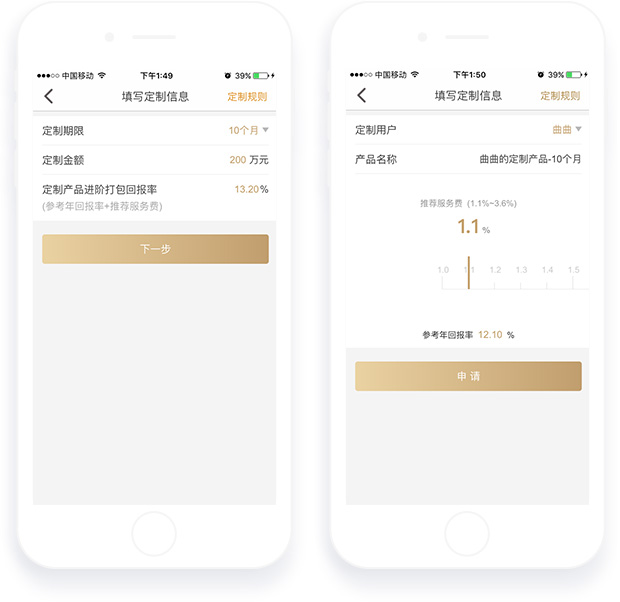

定制产品是什么
定制产品是理财师根据用户资产使用情况主动为用户发起的产品。
如何发起定制申请
-选择定制期限-->输入定制金额-->获取打包回报率-选择定制用户-->设置产品名称-->设置推荐服务费

提交申请后：工作人员会在上午10：00时、下午14：00时进行审核，审核结果过会短信通知到您注册的手机上。
定制规则
-起定金额20万元，当天累计定制上限金额2000万元
-每天允许发起5笔定制产品，包括审核中和审核通过的定制。
-定制审核通过后累计超过3次未打款，将增加定制审核要求。
-定制产品审核通过后，只有选定的用户能看到该产品，其他用户不可见。
-审核通过的定制产品因用户购买不及时而没有支付成功的，该定制产品3天后会在店铺内下架。
定制状态查询
在理财师APP-->工作室-->私人定制中查看。
定制产品上架规则
审核通过的产品默认上架，在理财师APP-->产品-->类固定收益-->定制产品中查看，如果要取消已上架产品请联系您的理财师支持。
用户支付规则
-生成定制产品待付款订单时，当日16：00前未支付到账平台将取消待付款订单。
-用户使用银行卡打款成功后，需要理财师协助用户提供打款凭证和打款银行卡号。
取消规则
-当日主动取消定制超过3次，今日不能再发起定制。